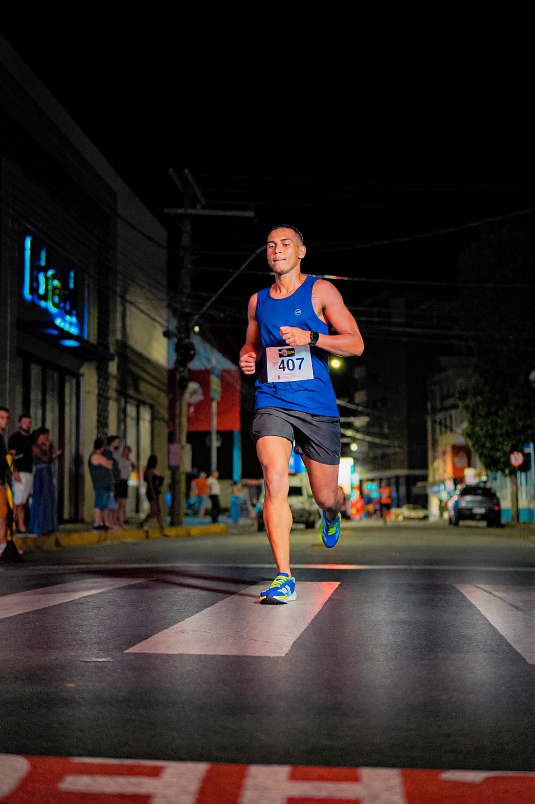
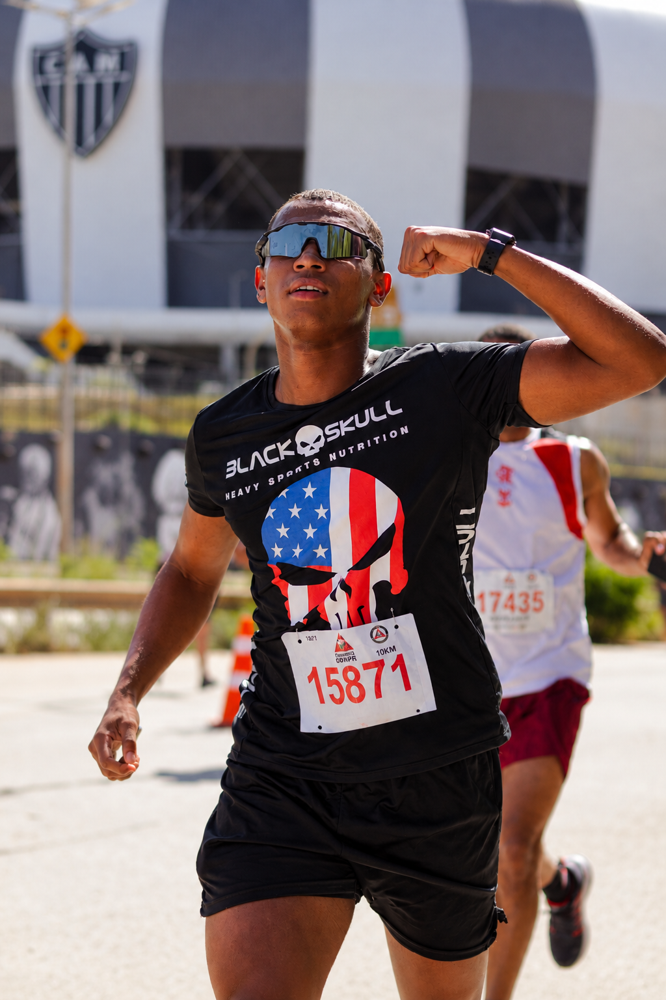
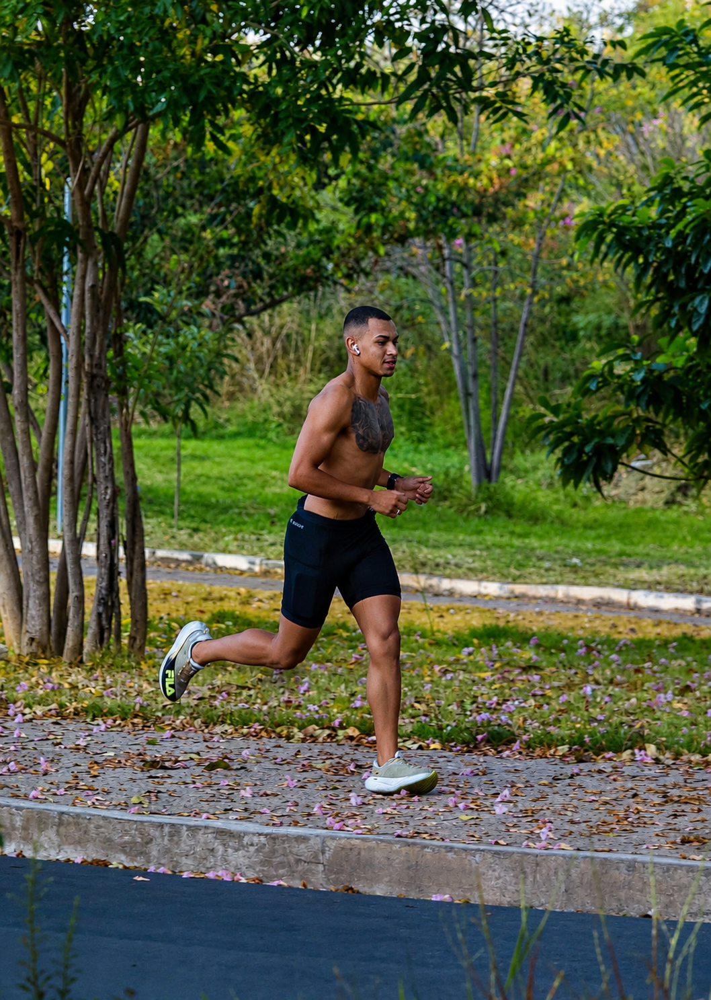
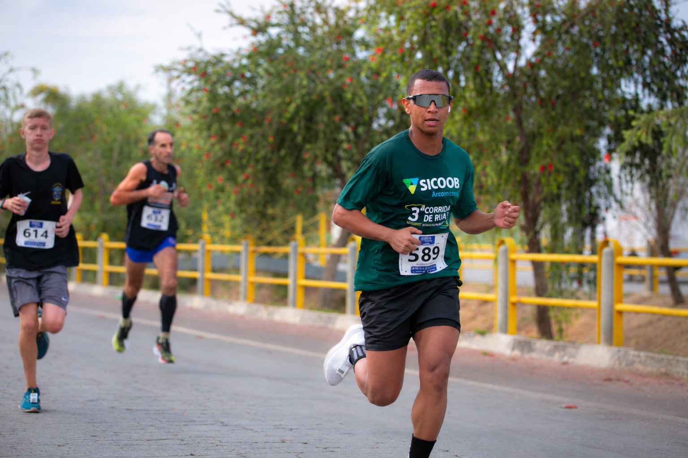

01 / CORRIDA + FORÇA
Treinamento híbrido
Resistência cardiovascular, força e condicionamento organizados para a sua rotina.
Saiba Mais ↗
Treinamento de corrida e musculação para desenvolver seu potencial, ganhar força, melhorar o condicionamento físico e alcançar resultados de forma saudável, equilibrada e consistente.

Sou Rhyan Martins, bacharel em Educação Física, treinador e apaixonado por corrida. Também sou corredor e meio-maratonista, então conheço de perto os desafios de conciliar treinamento, evolução física, recuperação e rotina.
Minha experiência com a corrida e a musculação me mostrou que não existe uma fórmula única para todo mundo. Cada pessoa tem um ponto de partida, um objetivo e um ritmo de evolução.
Meu trabalho é unir conhecimento técnico e vivência prática para ajudar você a treinar com planejamento, consistência e segurança — seja para começar a correr, melhorar suas marcas, emagrecer, ganhar massa muscular ou se sentir mais forte.
Do primeiro quilômetro à próxima meia maratona. O treinamento acompanha seu nível e seu objetivo.
Resistência cardiovascular, força e condicionamento organizados para a sua rotina.
Saiba Mais ↗Planejamento gradual, ritmo e preparação para as distâncias que você busca.
Saiba Mais ↗
Exercício como parte de um processo sustentável, sem atalhos nem prazo prometido.
Saiba Mais ↗
Exercícios e progressão planejados para seu objetivo, experiência e rotina.
Saiba Mais ↗Volume, intensidade e recuperação são ajustados ao histórico e à resposta individual ao treino.

Selecione uma modalidade para conhecer as opções de acompanhamento.
Um processo que respeita seu contexto e abre espaço para evoluir com consistência.
Conhecer sua rotina, histórico e objetivos.
Organizar o treinamento de forma individualizada.
Treinar com atenção à técnica, consistência e recuperação.
Acompanhar a resposta e ajustar quando necessário.

Condicionamento, força, constância e conquistas em prova têm formas diferentes para cada aluno. Aqui, cada história será contada com autorização e contexto.
Respostas diretas para você entender como o treino pode se encaixar na sua vida.
Sim. O ponto de partida considera seu histórico, sua condição atual e sua rotina. A evolução acontece de forma gradual, sem exigir experiência prévia.
Em muitos casos, sim. A distribuição depende dos objetivos, disponibilidade e recuperação. O planejamento organiza as duas modalidades para que façam sentido em conjunto.
Não necessariamente. O resultado depende de como corrida e força são combinadas, além de alimentação, sono, volume de treino e características individuais.
O melhor plano é o que se adapta à pessoa e pode ser mantido. Exercício é parte do processo; não há promessa de perda de peso em prazo determinado.
O acompanhamento começa entendendo sua rotina, experiência e objetivo. Formato, frequência e disponibilidade precisam ser combinados diretamente com o treinador.
Não. Os exercícios podem ser adaptados ao seu nível e a progressão começa de acordo com o que você consegue executar com segurança.
Use o botão de agendamento para indicar o serviço e seu objetivo. A disponibilidade ainda precisa ser confirmada diretamente com Rhyan.
Esse é um dos pontos considerados no planejamento. Horários, frequência e formato de atendimento são alinhados conforme a disponibilidade real.

Você não precisa estar pronto para começar. Precisa começar com um plano que faça sentido para você.
Dê o primeiro passo ↗O formulário só compartilha os dados se você escolher continuar para o WhatsApp e tocar em “Enviar”. Antes de publicar, informe controlador, finalidade, base legal, retenção e canal para exercício dos direitos previstos na LGPD. Configure esses dados e uma política de privacidade real antes de habilitar o envio.